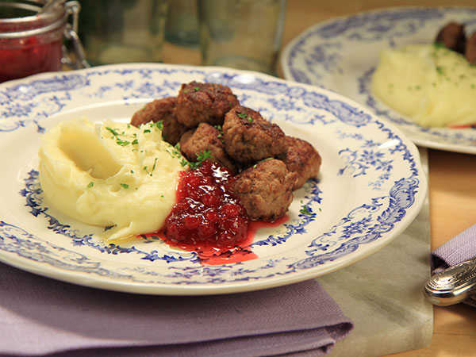

Ingredients
- 2 slices fresh white bread
- 1/4 cup milk
- 3 tablespoons clarified butter, divided
- 1/2 cup finely chopped onion
- A pinch plus 1 teaspoon salt
- 3/4 pound ground chuck
- 3/4 pound ground pork
- 2 large egg yolks
- 1/2 teaspoon black pepper
- 1/4 teaspoon ground allspice
- 1/4 teaspoon freshly grated nutmeg
- 1/4 cup plain flour
- 3 cups beef broth
- 1/4 cup double cream
Method
- Preheat oven to 200 degrees F.
- Tear the bread into pieces and place in a small mixing bowl
along with the milk. Set aside.
- In a 12-inch straight sided saute pan over medium heat,
melt 1 tablespoon of the butter. Add the onion and a pinch of salt
and sweat until the onions are soft. Remove from the heat and set aside.
- In the bowl of a stand mixer, combine the bread and milk mixture,
ground chuck, pork, egg yolks, 1 teaspoon of kosher salt, black pepper,
allspice, nutmeg, and onions. Beat on medium speed for 1 to 2 minutes.
- Using a scale, weigh meatballs into 1-ounce portions and place on a
sheet pan. Using your hands, shape the meatballs into rounds.
- Heat the remaining butter in the saute pan over medium-low heat,
or in an electric skillet set to 250 degrees F. Add the meatballs
and saute until golden brown on all sides, about 7 to 10 minutes.
Remove the meatballs to an ovenproof dish using a slotted spoon and
place in the warmed oven.
- Once all of the meatballs are cooked, decrease the heat to low and
add the flour to the pan or skillet. Whisk until lightly browned,
approximately 1 to 2 minutes. Gradually add the beef stock and whisk
until sauce begins to thicken. Add the cream and continue to cook until
the gravy reaches the desired consistency. Remove the meatballs from the
oven, cover with the gravy and serve.